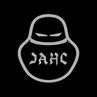

Asistente de guiones
Escribe tu guion con IA y mándalo directo a TexJAHC
🔑 Tu clave de Claude (API)
La sacas en console.anthropic.com → API Keys. Se cobra aparte según lo que uses (un guion cuesta centavos).

Escribe tu guion con IA y mándalo directo a TexJAHC
La sacas en console.anthropic.com → API Keys. Se cobra aparte según lo que uses (un guion cuesta centavos).